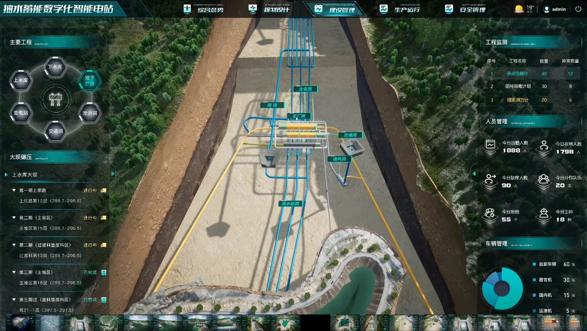

这些年我参与智慧城市与工业可视化项目，常常要在 GIS、BIM 和 UE 之间来回切换。下面记录几个在实际制作中反复遇到的环节。它是一篇方法笔记，不指向某个特定客户项目。
先让数据的位置可信
城市级场景往往从底图、SHP、倾斜摄影和建筑模型开始。坐标系统、道路边界与地形高程如果在早期没有统一，后面的镜头、标注和交互都会不断返工。我会先检查数据覆盖范围、坐标与精度，再按用途决定哪些内容需要完整保留，哪些可以简化。

模型进入引擎后，要为实时运行重新整理
从 Revit 或其他建模流程来的 BIM 数据，通常带有大量细节和属性。视觉质量与运行效率要一起考虑：拆分层级、合并重复对象、处理材质与光照，并保留之后查询需要的构件信息。这样场景既能看，也能被交互使用。
把系统状态变成能读懂的画面
可视化不是把图表贴在三维城市上。信息密度、镜头距离、昼夜与天气变化都会影响阅读。我更关注在不同尺度下突出什么：全局看分布，局部看事件和属性，交互后再给出更细的信息。

形成可复用的流程
在团队协作中，标准化的导入规则、材质方案与功能模块比单次手工调整更有价值。天气、昼夜、季节以及信息查询等能力可以逐渐沉淀成模块，让后续场景更快进入稳定状态。
现在我把这些经验带向智能空间：空间不仅被看见，也能根据真实数据与人的行为做出回应。